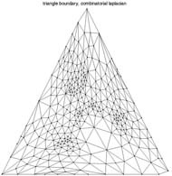
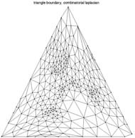

| L0 = D + W | (symmetric, normalized) | |
| L1 = D^{-1}*L0 = Id + D^{-1}*W | (non-symmetric, non-normalized) | |
| L2 = D^{-1/2}*L0*D^{-1/2} = Id + D^{-1/2}*W*D^{-1/2} | (symmetric, normalized) |
| W(i,j)=1 | (combinatorial) | |
| W(i,j)=1/|vi-vj|^2 | (distance) | |
| W(i,j)=cot(alpha_ij)+cot(beta_ij) | (harmonic) |
% kind of laplacian, can be 'combinatorial', 'distance' or 'conformal' (slow)
laplacian_type = ...;
% load two different kind of laplacian and check the gradient factorization
options.symmetrize = 1;
options.normalize = 0;
L0 = compute_mesh_laplacian(vertex,face,laplacian_type,options);
G0 = compute_mesh_gradient(vertex,face,laplacian_type,options);
disp(['Error (should be 0): ' num2str(norm(L0-G0'*G0, 'fro')) '.']);
options.normalize = 1;
L1 = compute_mesh_laplacian(vertex,face,laplacian_type,options);
G1 = compute_mesh_gradient(vertex,face,laplacian_type,options);
disp(['Error (should be 0): ' num2str(norm(L1-G1'*G1, 'fro')) '.']);
% these matrices are stored as sparse matrix
spy(L0);
d F / dt = -L*f with F(x,t=0)=f
until some stopping time t.
When this diffusion is applied to each component of the positions of the vertices f=vertex(i,:), this smoothes the 3D mesh. Implement this PDE using an explicit discretization in time.
% the time step should be small enough
dt = 0.1;
% stopping time
Tmax = 10;
% number of steps
niter = round(Tmax/dt);
% initialize the 3 vectors at time t=0
vertex1 = vertex;
% solve the diffusion
for i=1:niter
% update the position by solving the PDE
vertex1 = vertex1 + ...;
end

|
| Heat diffusion on a 3D mesh, at times t=0, t=10, t=40, t=200. |
F = argmin_g |f-g|^2 + t * |G*f|^2
The solution of this optimization is given in closed form using the Laplacian L=G'*G as the solution of the following linear system:
(Id+t*L)*F = f
Solve this problem for various t on a 3D mesh. You can use the operator \ to solve a system. How does this method compares with the heat diffusion ?
% solve the equation
vertex1 = ...;
% display
...


 
